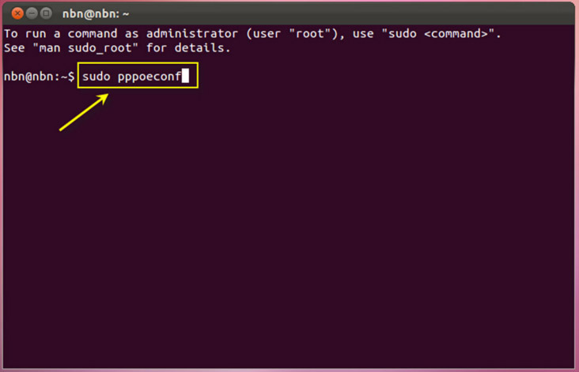
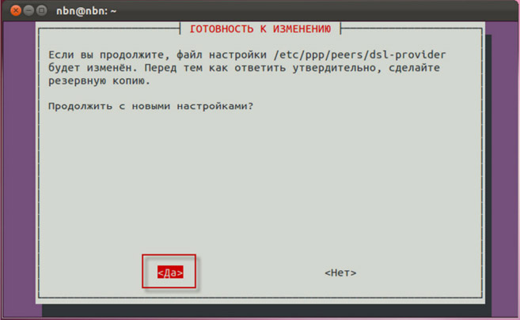
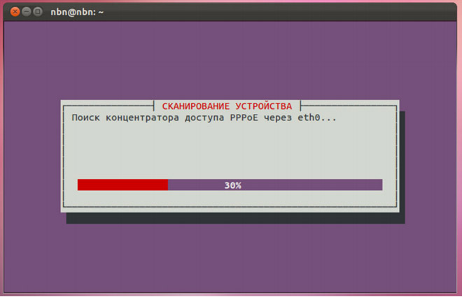
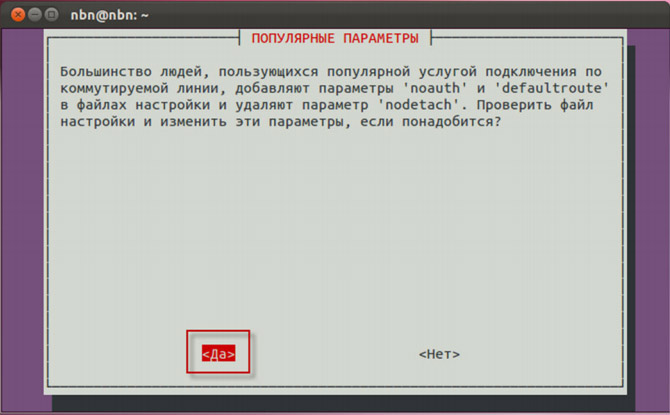
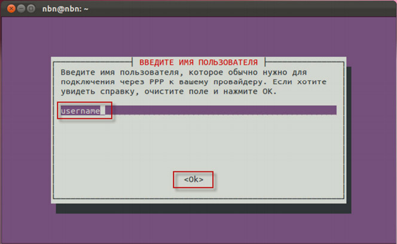
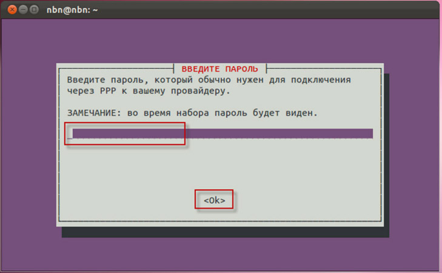
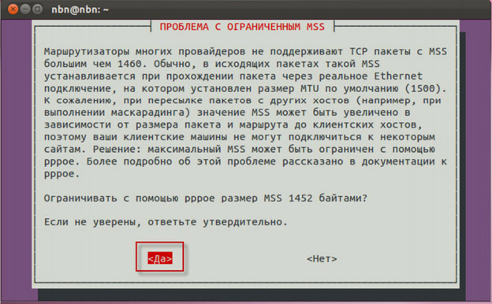
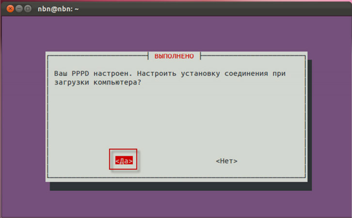
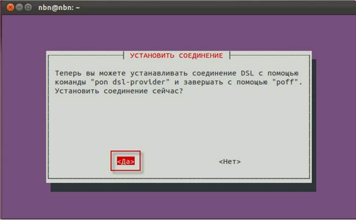
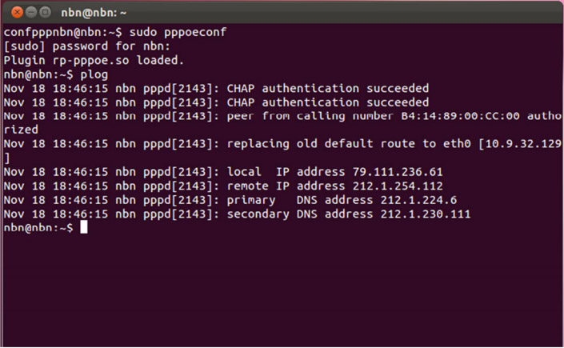

Настройка интернет соединения (PPPoE) для Linux на примере подключения к NetByNet.
В стандартный пакет дистрибутива Ubuntu входит утилита для настройки PPPoE соединений — pppoeconf. Для настройки PPPoE нам потребуются полномочия супер пользователя root (по сути администратора системы). Для этого вызовем команду pppoeconf через sudo (запуск команды от пользователя root).
В терминале (Приложения → Стандартные → Терминал, либо комбинацией клавиш Ctrl+Alt+T) набираем команду sudo pppoeconf:

Для подтверждения запуска команду pppoeconf от супер пользователя root нас просят ввести пароль нашего непривилегированного пользователя. Вводим свой пароль и нажимаем клавишу Enter
Далее перед нами появляется непосредственно сама программа настройки соединения. В большинстве случаев, нужно просто нажать “Да”. Мы так и сделаем — жмём “Да”.

Следующий шаг — поиск сервера PPPoE-авторизации на каждом из сетевых устройств. Эта процедура обычно занимает несколько секунд. Если на этом этапе утилита pppoeconf выдаст отрицательный ответ — проверьте,
подключен ли кабель к вашей сетевой карте и так далее.

Далее у вас спросят, хотите ли вы использовать опции defaultroute (автоматически добавляет маршрут по умолчанию ) и noauth (не требовать от аутентификации PPPoE сервера) и удалить опцию nodetach. В большинстве случаев все эти действия необходимы для успешного подключения — отвечаем Да:

Далее pppoeconf запросит у вас ваш PPPoE логин. Вам нужно будет ввести свой логин по договору. Вводим и нажимаем “Ок”:

Далее вводим пароль. И опять же — “Ок”. Будьте внимательны при вводе пароля. В случае ошибки вы сможете повторить настройку при помощи pppoeconf.

В следующем диалоге выбираем «Да».

Далее выбираем нужно ли автоматически подключаться к интернету, отвечаем «Да»:

Для проверки соединения нажимаем «Да»:

Завершающий диалог, просто нажимаем «Ок»:
На этом настройка окончена. Теперь вы можете открыть ваш браузер и проверить всё ли работает. Так же вы можете убедится в успешном подключении через PPPoE введя в терминале команду plog:

Напоминаем, что вы в любой момент можете разорвать соединение командой sudo poff dsl-provider и установить соединение командой sudo pon dslprovider.